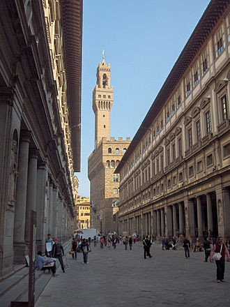
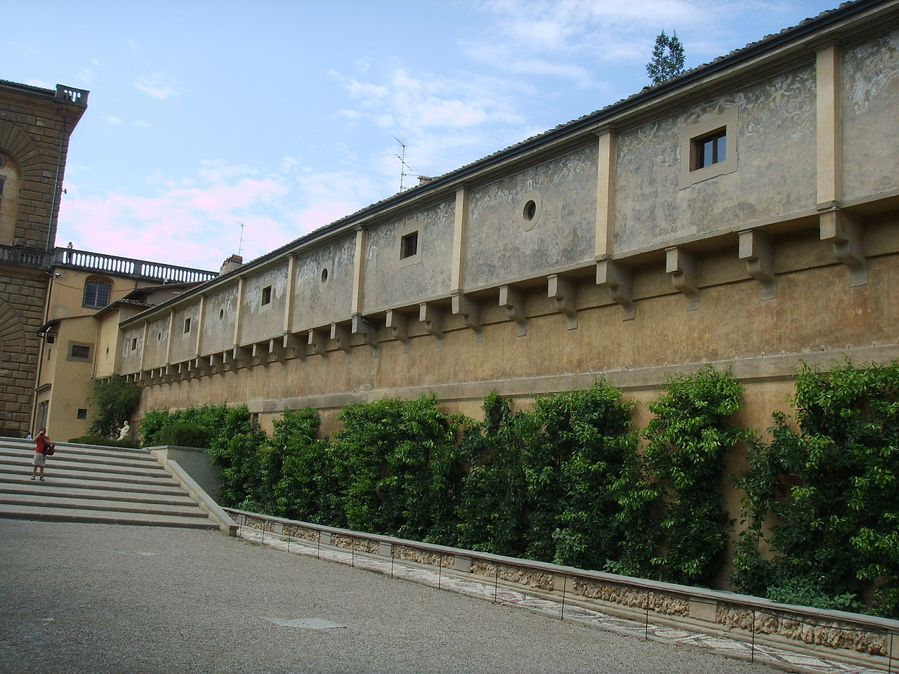
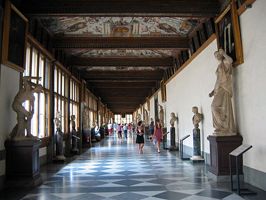
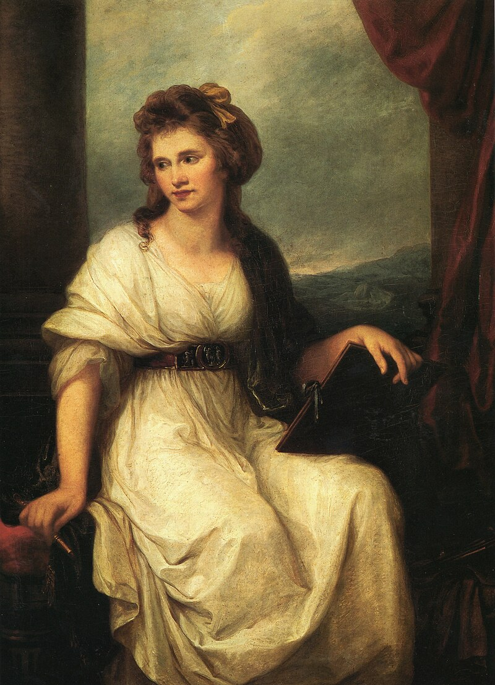
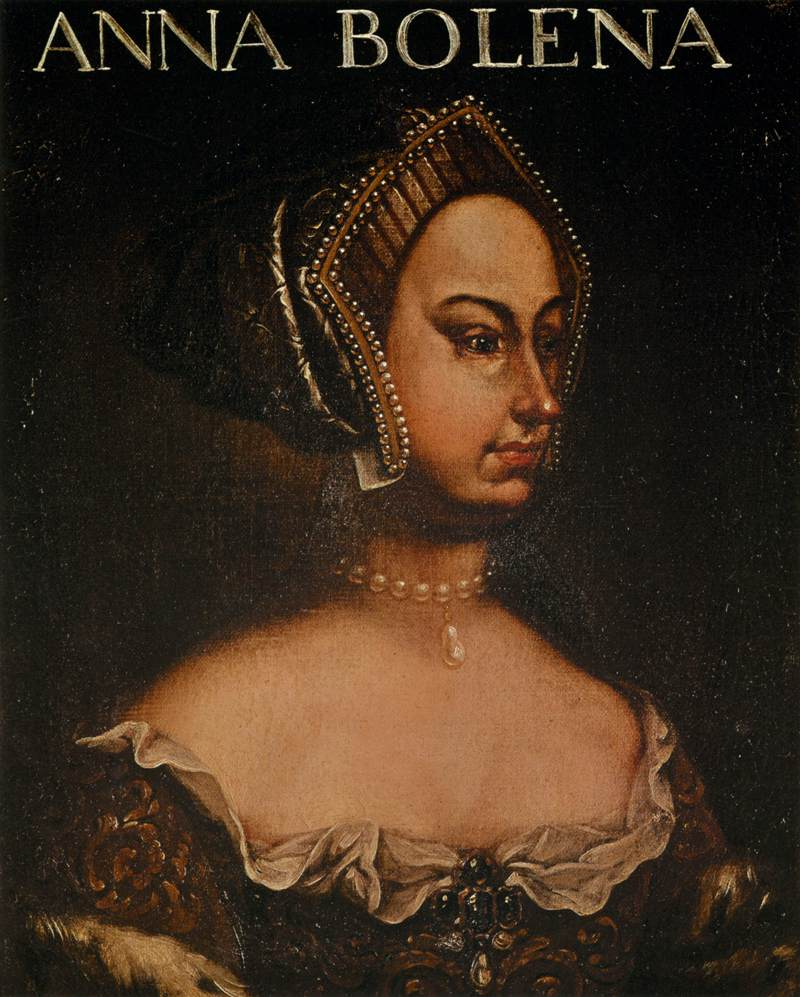

Найбільших і найзначущій музей європейського образотворчого мистецтва. Знаходиться у Флоренції.
Офіційний сайт
| Вигляд музею | Частини музею | Історія музея | |
|---|---|---|---|
| Коридор Вазарі | Портретна колекція Джовіо | ||
|  | Видовжена крита галерея-перехід у галереї Уффіці | Портретна галерея уславлених діячів як приклад для наслідування | Головні дати в історії музею |
|  Вигляд Коридору Вазарі |
 Вигляд Портретної колекції Джовіо |
Історія Уффіці починається в липні 1559 р., коли правитель Флоренції Козімо I Медічі замислив об'єднати всі адміністративні служби міста в загальному просторому палаці. | |
Картина,яка зберігається у Коридорі Вазарі Ангеліка Кауффманн |
Картина,яка зберігається у колекції Джовіо Анна Болейн |
Галерея Уффіці була відкрита для публіки в 1765 році. Виникнення галереї пов'язане з ініціативою великого великодня Франческо Стефано, великого герцога Тоскани. Він ріший зібрати колекцію картин і скульптур, яка почала формуватися вже в 16-17 століттях завдяки імператору Рудольфу II та імператору Леопольду I | .|